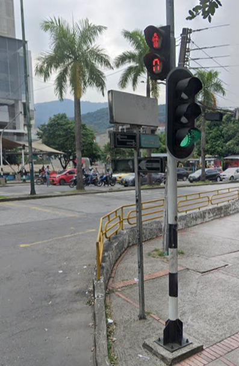

Semaforo Cerca de Alkosto
Este semáforo en particular ha evidenciado problemas significativos en su diseño y funcionamiento debido a una mala
optimización en el código que regula sus operaciones. Este defecto técnico genera fallas intermitentes y desincronización
en la señalización, lo cual afecta directamente la fluidez del tráfico vehicular y peatonal. Como consecuencia, los tiempos
de espera en los cruces se vuelven inconsistentes, causando confusión y aumentando el riesgo de accidentes. Además, esta
deficiencia pone en evidencia la necesidad de revisar y actualizar el sistema de control para garantizar un funcionamiento
adecuado que responda a las necesidades de la movilidad urbana de manera eficiente y segura.
